Battlefield Waltz32 characters · 403 usable portraits2 sourcesBattlefield Waltz · Official Art BookBattlefield Waltz · Native sprite portraits
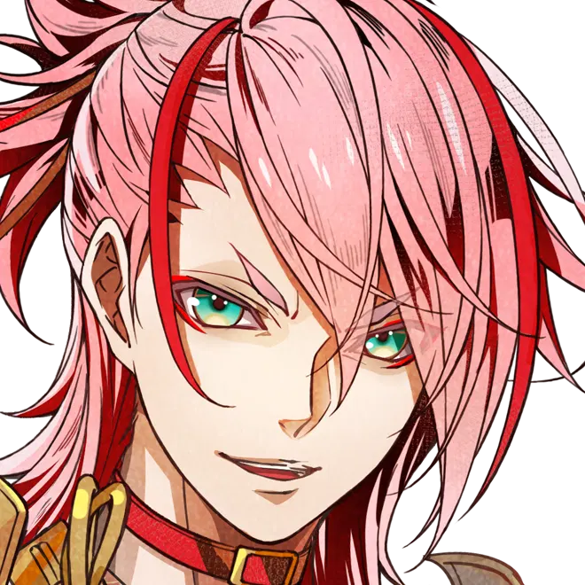Birushana19 characters · 73 usable portraits3 sourcesWinds of Fate Digital Art Book · Official Promotional Art and CGsRising Flower of Genpei close-up expression sprites
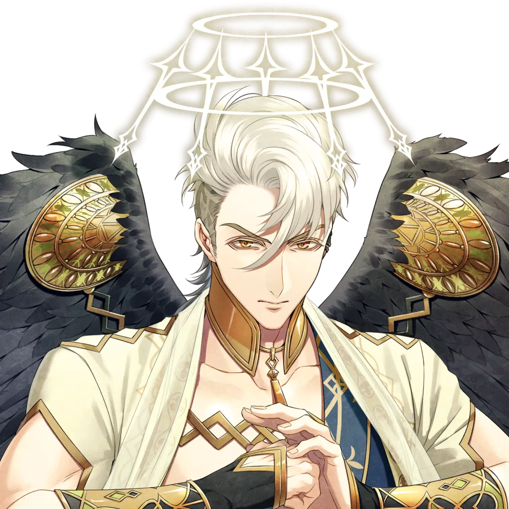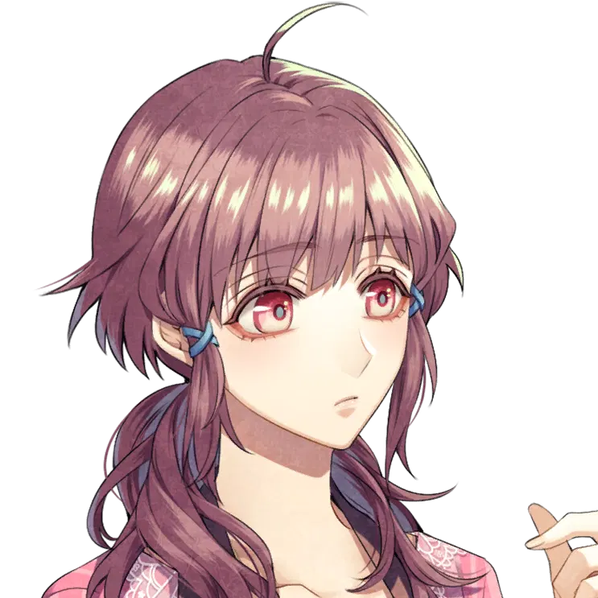Café Enchanté9 characters · 476 usable portraits2 sourcesCafé Enchanté · Cafe Enchante close-upsCafé Enchanté · Native sprite portraits
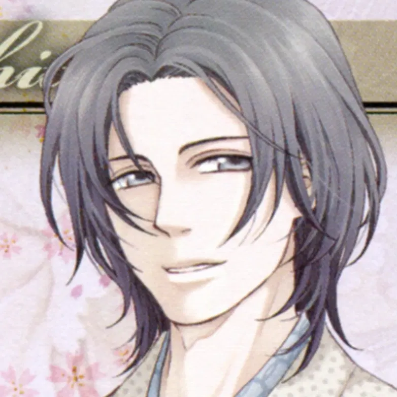Chou no Doku, Hana no Kusari16 characters · 214 usable portraits1 sourceChou no Doku, Hana no Kusari
Code:Realize13 characters · 79 usable portraits3 sourcesDesign WorksFuture BlessingsGuardian of Rebirth close-ups
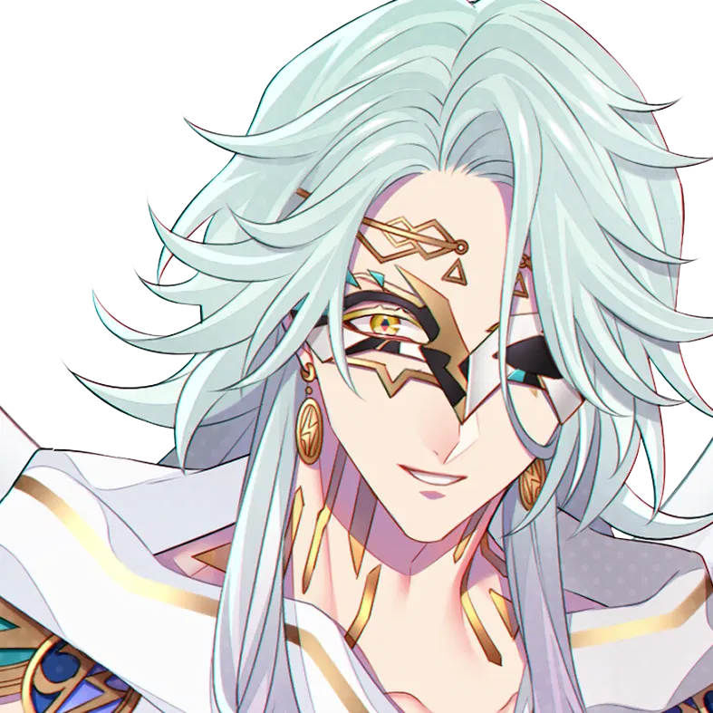Cupid Parasite11 characters · 189 usable portraits2 sourcesCupid Parasite close-upsCupid Parasite: Sweet and Spicy Darling close-ups
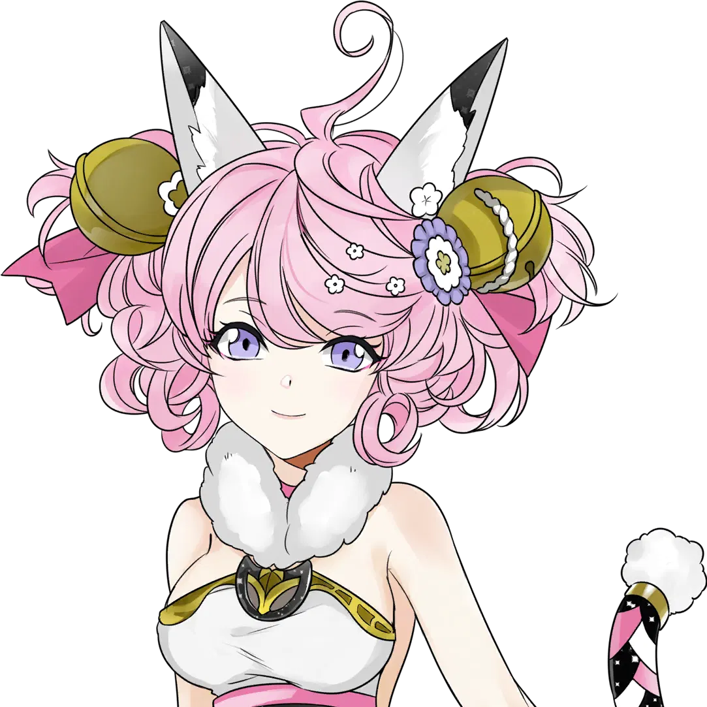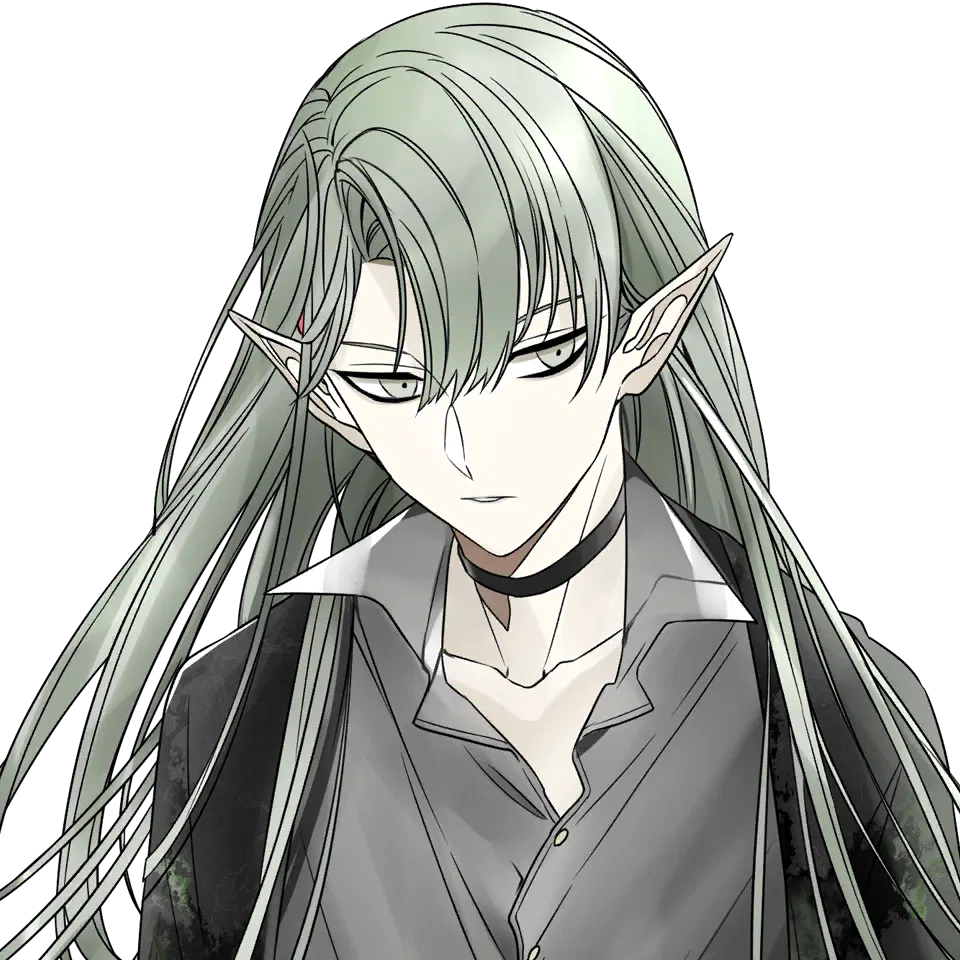Dairoku6 characters · 519 usable portraits1 sourceDairoku: Agents of Sakuratani close-ups
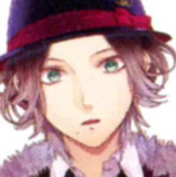DIABOLIK LOVERS19 characters · 206 usable portraits7 sourcesDark PleasureOfficial Settings (EPUB)HDB Visual FanbookOfficial Settings (scans)IllustrationsChaos Lineage close-upsHaunted Dark Bridal close-ups
even if TEMPEST16 characters · 480 usable portraits2 sourceseven if TEMPESTeven if TEMPEST: Dawning Connections close-ups
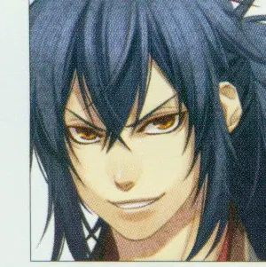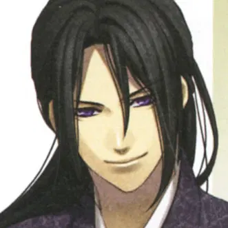Hakuouki11 characters · 35 usable portraits2 sourcesGengashuuReimeiroku Gengashuu
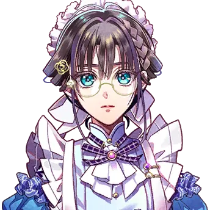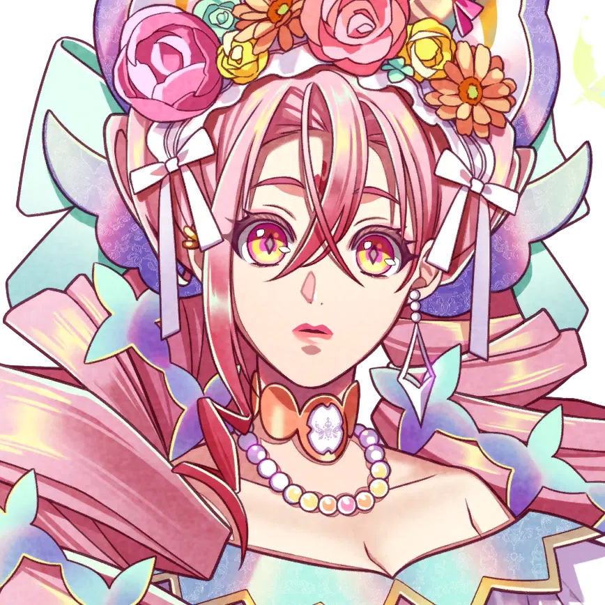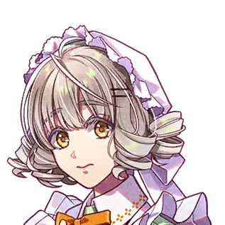Mistonia’s Hope5 characters · 47 usable portraits1 sourceMistonia's Hope -The Lost Delight- close-ups
Neon Clash: Echoes of the Lost17 characters · 754 usable portraits1 sourceNeon Clash: Echoes of the Lost close-ups
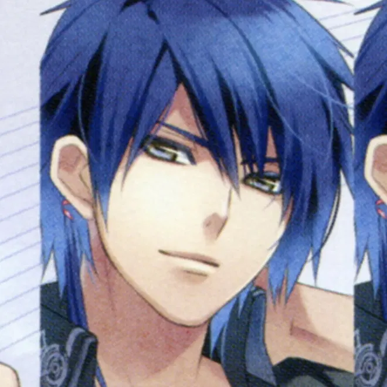NORN912 characters · 125 usable portraits3 sourcesOfficial Fan BookCD and Premium BookNorn9: Var Commons close-ups
Olympia Soirée18 characters · 176 usable portraits2 sourcesOlympia Soiree close-upsOlympia Soiree Catharsis close-ups
Piofiore28 characters · 412 usable portraits4 sourcesEpisodio 1926Original fanbookEpisodio 1926 close-upsFated Memories close-ups
Psychedelica of the Ashen Hawk5 characters · 333 usable portraits1 sourcePsychedelica of the Ashen Hawk · Native sprite portraits
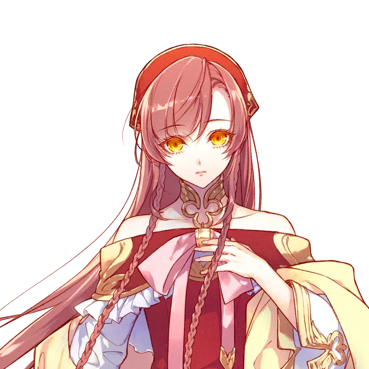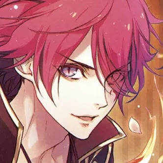Radiant Tale20 characters · 90 usable portraits3 sourcesRadiant TaleRadiant Tale close-upsRadiant Tale -Fanfare!- close-ups
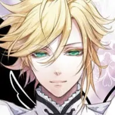Reine des Fleurs17 characters · 105 usable portraits3 sourcesVisual fanbookWorld guidebookReine des Fleurs close-ups
TAISHO × ALICE4 characters · 458 usable portraits2 sourcesHEADS & TAILS close-upsTaisho x Alice close-ups
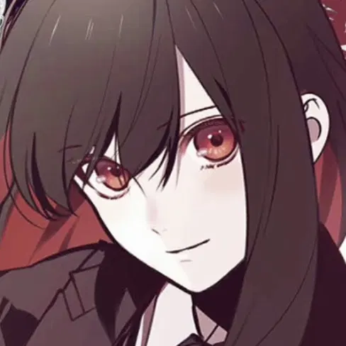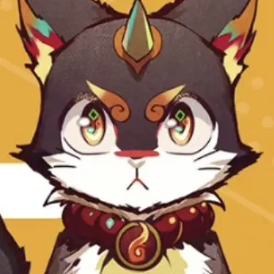Tengoku Struggle18 characters · 305 usable portraits2 sourcesStraysideTengoku Struggle -Strayside- close-ups